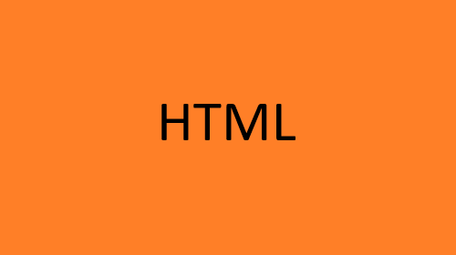
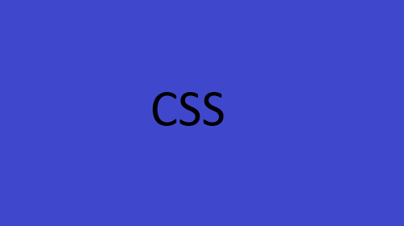

O que é HTML
Uma linguagem de marcação de Hipertexto para criar paginas na web.
Especificações
- Significa linguagem de marcação de Hipertexto
- Para utilizar usamos os elementos que rotulam: cabeçalho, parágrafo, inserção de imagens, etc.
- Descreve a estrutura de uma página web.

saiba mais sobre o HTML AQUI
O que é CSS
CSS é a linguagem que usamos para estilizar uma página da Web.
Especificações
- CSS significa Cascading Style Sheets
- CSS descreve como os elementos HTML devem ser exibidos na tela, no papel ou em outras mídias
- CSS economiza muito trabalho. Ele pode controlar o layout de várias páginas da web de uma só vez
- Folhas de estilo externas são armazenadas em arquivos CSS

Para saber mais sobre CSS clique AQUI